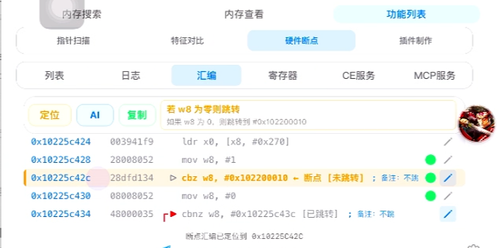

快速搜索与筛选
支持多种数值与文本搜索方式，可持续缩小结果，并对结果进行修改、冻结、收藏和批量处理。
MT Family 是一套面向 iPhone / iPad 高级用户、开发者与安全研究场景的工具系列。 从运行中的数据分析，到 AI 辅助工程开发，再到可持续运行的自动化执行， 三款产品各自独立，也能在同一套工作流里互相补位。
每款产品都解决一个明确问题：看清运行状态、把想法变成工程、让重复操作自动执行。
在 iPhone 上完成内存搜索、稳定定位、实时追踪、查看与修改，让运行中的数据真正变得可观察、可验证。
把 AI、项目工作区、开发环境、代码分析、编译打包与真机调试集中到 iPhone 上，形成真正可执行的移动工程工作站。
让点击、滑动、图像识别、文字识别与输入动作持续运行在悬浮工具中，把重复手机操作变成稳定的自动化流程。
MT 内存工具面向需要观察、定位和验证运行时数据的用户。它把传统上分散在多个工具里的操作集中到手机端，让搜索、定位、追踪、查看、修改和成果保存形成连续工作流。
支持多种数值与文本搜索方式，可持续缩小结果，并对结果进行修改、冻结、收藏和批量处理。
当地址发生变化时，可通过多种稳定定位方式重新找到目标，适合长期调试与重复验证。
对关键数据或代码设置实时追踪，查看何时发生变化、从哪里触发，并保留现场供进一步分析。
从数据视图进入代码视图，对候选修改进行验证，并保留恢复路径，降低反复试错成本。
可在目标 App 运行时保持悬浮入口，横竖屏切换时也能继续查看和操作，不必频繁来回切换应用。
将已经验证的定位、修改和流程整理成可复用项目，减少下一次从零开始的重复工作。

MT 智能体把对话、项目文件、开发环境和可执行工具放进同一个原生 iOS 工作区。你可以让它理解项目、修改代码、运行命令、分析程序、构建产物，并在长任务中持续保留上下文。
会话、工作区、附件、工具卡片和任务进度统一呈现，复杂工作不再挤在一条终端输出里。
读取和修改项目文件、运行命令、检索代码、处理 Git 工作流，并把执行结果直接带回当前会话。
开发、脚本、构建、分析能力可按需安装和更新，手机本体保持轻量，需要时再启用对应工具。
同一个智能体可在项目理解、静态分析、编译打包和真机调试之间切换，减少跨设备搬运上下文。
复杂任务可以拆分给多个子任务并行处理，主会话持续汇总进度、结果和下一步决策。
可以接入不同模型、外部工具和扩展能力，让智能体根据当前任务选择真正可用的工具。
MT 连点器面向重复操作、流程测试和视觉识别自动化场景。独立悬浮控制让任务在目标 App 之外保持可见、可控，并把手势、截图识别和文字输入组合到同一套操作体验中。
悬浮球可拖动、展开和关闭；主界面退出后，运行中的悬浮任务仍可继续保持。
支持点击、长按、双击、滑动、拖拽和多指操作，覆盖常见移动端自动化交互。
通过截图、找图和找色判断屏幕状态，让自动化不只依赖固定坐标。
可在设备本地识别屏幕文字，并把识别区域与后续动作连接起来。
支持系统键盘、中文输入法、输入法切换以及常用编辑动作，适合需要文本输入的流程。
针对手机实际使用场景处理横竖屏、触摸位置和浅色 / 深色主题，让悬浮控制保持一致体验。
它们不要求你把所有事情塞进一个 App；相反，每个工具专注解决自己最擅长的问题。
用 MT 内存工具观察运行状态，定位关键数据，追踪变化来源并验证结论。
让 MT 智能体继续理解项目、修改代码、执行工程任务、分析程序并完成构建。
用 MT 连点器把重复交互、识别与输入流程自动化，持续完成验证和日常任务。
MT Family 的产品层重点不是堆技术名词，而是把复杂能力整理成手机上可理解、可恢复、可持续使用的体验。
原生界面、深浅主题、横竖屏适配、悬浮交互与状态恢复，让高级工具仍然保持移动端使用习惯。
长时间分析、AI 工作、自动化运行都能明确展示当前状态，不把“正在做什么”藏在黑盒里。
把已经验证过的分析、工程配置与自动化流程保存下来，让下一次工作从成果继续，而不是重新开始。
面向 TrollStore 与不同越狱安装环境提供对应发行包，让同一套产品覆盖更多真实设备。
三款产品分别针对自己的运行需求维护系统兼容性。实际功能可用范围会随设备、系统版本与安装环境有所不同，以对应版本的实际检测结果为准。
Memory. Intelligence. Automation.